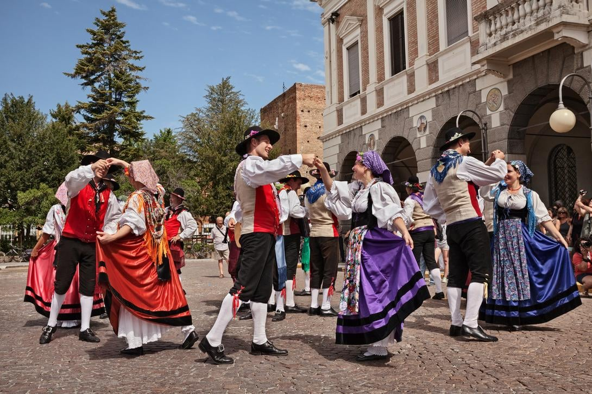

Cultura Italiana

A cultura italiana é uma das mais ricas e influentes do mundo, marcada por uma profunda conexão com a história, a arte e as tradições. Ela tem raízes na Antiguidade, com o Império Romano deixando um legado em arquitetura, direito e língua – o italiano deriva do latim. O Renascimento, que floresceu entre os séculos XIV e XVI, é um marco cultural, destacando-se em cidades como Florença e Veneza, com obras-primas de artistas como Michelangelo, Rafael e Botticelli.
A família é o coração da vida italiana, com forte ênfase em laços familiares e tradições compartilhadas, como grandes refeições em datas festivas. A culinária é um pilar cultural, valorizando ingredientes frescos e regionais – pense em massas, azeite de oliva, queijos como parmesão e vinhos de regiões como Toscana e Piemonte. A música também é essencial, desde óperas de compositores como Verdi e Puccini até canções populares modernas.
Os italianos são conhecidos por seu estilo de vida apaixonado e expressivo, refletido na moda (marcas como Gucci e Prada são ícones globais) e no amor pelo futebol, com clubes lendários como Juventus e Milan. Festas religiosas, como o Natal e a Páscoa, e festivais locais, como o Carnaval de Veneza, celebram a identidade regional. Apesar das diferenças entre o norte industrializado e o sul mais tradicional, a cultura italiana une história, criatividade e um apreço pela "dolce vita" – a doce vida.